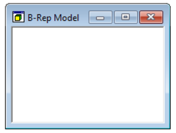
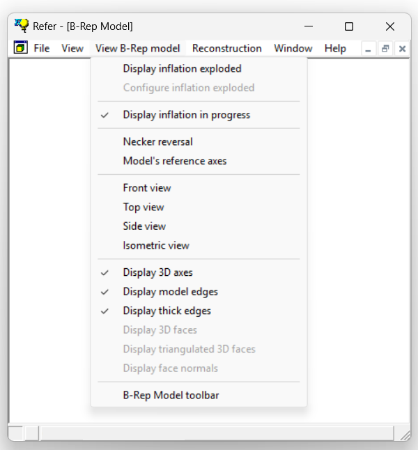

1.5.3.4 BRep Model Window
The BRep Model window is designed to display the explicit 3D model generated after the reconstruction of the input sketch. The model is rendered using Open GL (Version 1.2.2.0).

User can interact with the model in two ways:
1) Changing visualization parameters through the mouse
a) The point of view can be changed interactively by "rotating" the model. To do so, move the mouse while holding down the left button(1)(2).2) Model attributes can be changed by using the menu options available in the BRep Model toolbar.
b) Scrolling the mouse wheel up and down is used to zoom in and out.
The BRep Model window is associated with a specific toolbar that controls the content that is displayed within the window.

NOTES:
(1) To rotate the model, the mouse functions as a virtual trackball. This feature is based on the original trackball implementation developed by Gavin Bell for Silicon Graphics in November 1988.
(2) Releasing the mouse button while moving the model will cause the model to continue rotating until stopped. The rotation can be stopped by clicking the left mouse button a second time.